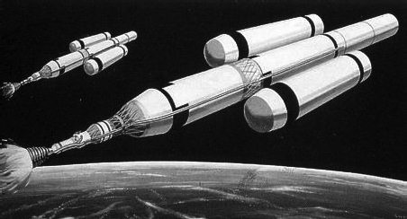
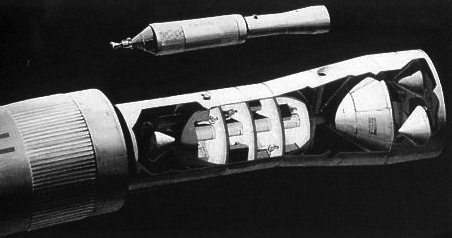

Отступление пятое. Марсианские проекты фон Брауна
Прежде чем я буду писать о последних веяниях американской космонавтики, хочу сделать еще одно небольшое отступление и рассказать о весьма любопытных проектах, которые были сформулированы Вернером фон Брауном много лет назад, еще до начала космической эры. Несмотря на то, что эти проекты так и остались на уровне общих рассуждений, сегодня они даже более актуальны, чем в середине ХХ века. Все последние годы человечество буквально грезит возможностью полета к Марсу, а немец как раз и говорил об экспедиции к Красной планете.
Проект марсианской экспедиции, сформулированный в конце 1940-х годов Вернером фон Брауном, является одной из первых детально проработанных программ подготовки полета к Красной планете. До запуска первого спутника оставались еще годы и годы, а проект межпланетного полета уже лежал на столе.
В то время немецкому конструктору не оставалось ничего иного, как думать о будущем, далеком и близком. К работам по ракетной тематике его не подпускали, а роль консультанта, к которой сводилось общение с американскими коллегами, его не очень удовлетворяла. В связи с этим единственное, что оставалось фон Брауну – это набраться терпения и ждать, приспосабливаясь к жизни в непривычном для себя мире, столь отличном от фатерланда.
Самые первые наброски будущего полета к Марсу были сделаны фон Брауном в 1948 году. Первоначально он облек свои изыскания в форму литературного произведения. В отличие от других романов, где большинство сюжетных коллизий было основано на самых фантастических предположениях и допущениях, работа фон Брауна базировалась на точных технических расчетах, выполненных самим автором. Книга была посвящена описанию экспедиции на Марс и впечатлений ее участников. Результаты же сделанных расчетов фон Браун привел в приложении к роману.
По словам тех, кто видел рукопись, она была ужасна. Литературным даром фон Браун явно не обладал, поэтому вряд ли мы смогли бы читать эту книгу с таким же увлечением, как произведения Айзека Азимова и братьев Стругацких. Зато приложение, изобиловавшее цифрами, формулами, графиками и схемами, было истинным творением гения. Именно поэтому и рассматривать роман надо не как произведение начинающего писателя-фантаста, а как план работ, который должен был с течением времени воплотиться в жизнь.
Вероятно, если бы рассказанная фон Брауном история получилась захватывающей, он бы опубликовал ее. Но, с другой стороны, появись эта рукопись в 1948 году, как бы мы воспринимали ее сейчас: как фантастику или как конкретное техническое решение? Сказать трудно, а гадать дело неблагодарное. Я не буду этого делать, а просто перескажу суть идеи.
Убедившись в собственной несостоятельности как писателя, фон Браун до поры до времени не распространялся на тему полета к Марсу. Во-первых, он вновь и вновь перепроверял свои расчеты, что было для него гораздо важнее, чем сиюминутная слава литератора. А во-вторых, он тонко чувствовал, что еще не пришло время обнародовать свои мысли – пол-Европы лежало в руинах, да и его деятельность в нацистской Германии еще не до конца позабылась.
Впервые фон Браун рассказал о своей идее слетать к Марсу в декабре 1951 года на первом симпозиуме, посвященном проблемам космического полета. А уже спустя полгода с этим планом смогли ознакомиться читатели журнала «Коллиерз». Сухие технические расчеты были сопровождены прекрасными иллюстрациями художника Чесли Бонстелла. Когда смотришь на его рисунки и понимаешь, что это лишь плод воображения, а не чертеж космического корабля, то невольно задаешься вопросом: «Как мог художник так трансформировать у себя в мозгу цифры и формулы инженера, чтобы создать столь конкретные и весьма красивые образы?». По большому счету, Бонстелла можно называть полноправным соавтором проекта. Но в истории космонавтики эта работа известна как марсианский проект фон Брауна 1952 года, а не проект Брауна-Бонстелла.
В 1953 году статья из «Коллиерз» вышла в сборнике «Пересекая границу космоса». В том же году технические приложения к проекту, не опубликованные журналом, были изданы отдельно на английском (в США) и немецком (в Германии) языках.
Но еще до того, как любой желающий смог самостоятельно проверить расчеты фон Брауна, хорошую рекламу проекту на американском телевидении сделал Уолт Дисней. Не удивляйтесь. Создатель Микки Мауса и Дональда Дака не только рисовал мультипликационных героев, но и являлся активным популяризатором последних достижений науки и техники. Тонко чувствуя веяния времени, имея немалые финансовые возможности, пользуясь своей популярностью, Дисней создал и в течение многих лет являлся ведущим ряда радио– и телепрограмм. У него в гостях побывала вся научная элита Америки 19501960-х годов.
Не удивительно, что приглашение побывать в гостях у великого сказочника получил и фон Браун. К слову сказать, их знакомство, состоявшееся в 1956 году, оказалось весьма плодотворным для обоих: Дисней получил в свою программу интересного собеседника, мысли которого намного опережали свое время, а фон Браун получил в свое распоряжение обширную аудиторию, которую можно было не только просвещать, но и использовать в своих интересах. Хорошо известно, что такое американское общественное мнение. Очень часто именно оно определяет финансовую политику Конгресса. Имеешь поддержку общества – имеешь шансы получить деньги. Фон Браун понял это сразу, поэтому с готовностью отправился в студию Диснея.
Однако вернемся к тому, что нафантазировал в конце 1940-х немецкий конструктор. Экспедиция на Марс по фон Брауну была не просто испытательным полетом, чтобы доказать техническую возможность такого мероприятия. Это был широкомасштабный комплексный научный проект, в процессе которого предстояло подробно изучить другую планету, собрать огромное количество материала и доставить все это на Землю. В перечень его задач предполагалось включить составление подробной карты Марса, исследования атмосферы, физического и химического составов грунта, геологические изыскания и так далее. За один полет планировалось собрать столько научных данных, что на их обработку должны были потребоваться годы, в течение которых могла быть подготовлена следующая экспедиция, целью которой стало бы освоение Красной планеты.
В состав экспедиции, сформированной по «арктической модели», должны были войти семьдесят человек, имеющих по несколько специальностей, чтобы в случае необходимости заменять друг друга.
Сегодня довольно активно обсуждается вопрос о том, должны ли в полет к Марсу отправиться только мужчины или будут смешанные экипажи. Фон Браун этой проблемы даже не касался. Для него все участники экспедиции были, в первую очередь, специалистами своего дела. Иначе говоря, существами бесполыми. На тот момент это была правильная позиция.
Фон Браун намеревался отправить к Марсу не один космический корабль, а целую флотилию из семи пилотируемых и трех грузовых космических аппаратов. Каждый из них должен был иметь стартовую массу 3720 тонн. Пилотируемые корабли должны были иметь экипаж в 10 человек, который предполагалось разместить в кабине диаметром 20 метров. Конечно, это не такой уж и большой объем для полета, рассчитанного на несколько лет. Но он значительно больше того, каким располагают ныне экипажи российских «Союзов», американских шаттлов или Международной космической станции. В баках каждого из пилотируемых кораблей должны были находиться запасы топлива (по 356,5 тонн), достаточные для обратной дороги.
В «грузовики» планировалось поместить 200-тонные посадочные модули и 195 тонн различных грузов, необходимых для жизнедеятельности астронавтов. Их возвращение на Землю не планировалось. Все это должно было быть использовано на Красной планете и там же оставлено.
О предварительных беспилотных миссиях, как это происходит сейчас, тогда речи не шло. Все должно было быть предусмотрено на Земле, включая внештатные ситуации, которые могли возникнуть. И возникли бы, если бы экспедиция состоялась. Об этом свидетельствует тот опыт, который человечество приобрело за пятьдесят лет, пока исследует космическое пространство. Но тогда такого опыта не было, а было романтическое ощущение преимущества человека над силами природы.
Чтобы собрать на околоземной орбите межпланетную флотилию, фон Браун предлагал задействовать трехступенчатую ракету, все ступени которой должны были быть многократного использования. Ракету еще предстояло спроектировать, но в свой план фон Браун вписывал ее как уже существующую.
Стоит обратить внимание, что эта ракета отличалась от современных кораблей многоразового использования, в которых не все составные части являются многократного применения. У фон Брауна же все, что взлетало с Земли, должно было на нее возвращаться.
Ракеты предполагалось запускать с тихоокеанского острова Джонстон, который идеально подошел бы для этих целей. Он удален от густонаселенных островов и от судоходных линий, а значит, можно было бы меньше внимания уделять безопасности при стартах. Он находится неподалеку от экватора, а это позволило бы увеличить, по сравнению с другими стартовыми площадками, массу выводимого на орбиту груза при тех же затратах энергии. А благодаря мягкому климату эксплуатировать космодром можно было бы круглый год [4].
После старта ракеты ее первая ступень, когда заканчивалось горючее в баках, должна была отделиться и на парашюте опуститься в 304 километрах от острова Джонстон. Специальные суда должны были выловить ее из океана и отбуксировать обратно на космодром. Точно так же должны были поступить и со второй ступенью, приводнение которой ожидалось в 1459 километрах от места старта.
Третья ступень должна была доставить на орбиту 39,5 тонны грузов: 25 тонн конструкций межпланетных кораблей и расходных материалов, а также 14,5 тонны топлива для перекачки в баки. По окончании этой операции ступень должна была совершить автономный управляемый спуск в атмосфере Земли и приводниться в районе острова Джонстон. Там ее также должны были подобрать специальные суда и доставить к месту старта.
После восстановления и подготовки к новому полету, все ступени предполагалось соединить и вновь использовать для доставки на орбиту очередной порции грузов.
Смелое решение, не правда ли? И весьма эффективное, если рассматривать его с экономической точки зрения. То есть уже тогда фон Браун шел именно по тому пути, который столь популярен в наше время – сведение к минимуму затрат на освоение космического пространства. Правда, расходы все равно были бы гигантскими. Но тогда полагали, что средства найдутся. И находили, когда это было нужно.
Ну ладно, хватит о деньгах. Тем более что бухгалтерские вопросы фон Браун в своем проекте не рассматривал.
Если же сказать о технической стороне в вопросе создания полностью многоразовых космических носителей, то эта проблема не решена до сего дня. И вряд ли будет решена в ближайшее десятилетие. Разве что вдруг появится специалист, который предложит какое-то неординарное техническое решение. Но надежды на это мало.
Итак, фон Браун предположил, что в его распоряжении есть ракета, которую он может неоднократно использовать для доставки грузов на орбиту.
По его расчетам, для сборки «марсианского флота» и заправки его компонентами топлива требовалось задействовать 46 ракет (комплектов ступеней), которые должны были совершить в общей сложности 950 рейсов по маршруту «Земля – орбита – Земля». Грубо говоря, каждый комплект должен был слетать 2021 раз. На всю операцию по сборке кораблей на орбите отводилось 8 (!) месяцев.
Давайте проведем несложные расчеты. Чтобы реализовать задуманное фон Брауном мероприятие требовалось проводить по четыре пуска в день. По большому счету это нереально. Даже в лучшие годы космической гонки (конец 1970-х – начало 1980-х годов) все страны мира со всех космодромов планеты проводили пуски космических носителей один раз в три дня. Сегодня этот показатель гораздо хуже – один пуск в 7–8 дней. А фон Браун предполагал пускать с одного космодрома четыре ракеты ежедневно.
То же самое можно сказать и о межполетной подготовке ракет (восстановление ступеней после предыдущего полета, их соединение в единую связку, заправку, загрузку и прочие наземные операции). На это отводилось в среднем одиннадцать дней. Для сравнения, сейчас на межполетную подготовку американских кораблей многоразового использования уходит несколько месяцев. И это в том случае, если все идет без проблем. А они возникают постоянно. Поэтому одиннадцать дней кажутся чем-то фантастическим. Темпы в духе военного времени, а не мирного периода. Может быть, в конце 1940-х годов фон Браун еще продолжал мыслить категориями нацистского рейха, а не американской демократии? Возможно. Хотя и маловероятно.
Для полета от Земли к Марсу предполагалось выбрать так называемую хоманновскую траекторию – оптимальный, с точки зрения энергетики полета, маршрут от Земли к другим планетам Солнечной системы и обратно. Это требовало достаточно длительного пребывания на Марсе, но вполне вписывалось в расчеты фон Брауна – время работы на Красной планете, по его мнению, должно было быть сравнимо с масштабами экспедиции.
Но вот сборка кораблей должна была закончиться, экипажи заняли бы свои места в кабинах, и можно было отправляться в глубины Солнечной системы. С околоземной орбиты марсианская флотилия должна была уйти одновременно с помощью собственных двигателей тягой 200 тонн каждый. Им предстояло проработать 66 минут, чтобы сообщить кораблям необходимую для межпланетного перелета скорость. При этом каждый корабль должен был израсходовать по 2814 тонн топлива, что составляло 76 % от первоначальной массы кораблей. Еще на несколько тонн они должны были облегчиться за счет сброса опорожненных баков.
В качестве топлива, которое использовалось бы в двигателях пилотируемых и беспилотных кораблей, фон Браун предлагал взять смесь азотного оксида и гидразина. Это было чрезвычайно ядовитое горючее, но оно сохраняло свои свойства в течение долгого времени. Что было очень важно при организации многолетней экспедиции.
Вслед за этим начинался долгий 260-суточный перелет к Марсу. Фон Браун предполагал, что члены экспедиции, а это, как должен помнить читатель, 70 человек, по десятку в каждой «скорлупке», не должны были провести весь перелет в полной изоляции по экипажам. Нет. Каждый корабль предполагалось оснастить небольшим аппаратом, мини-челноком, на борту которого путешественники могли бы свободно перемещаться между кораблями. Лихо! «А почему бы не наведаться в гости к Джону и Биллу?» Легко! Конечно же, подобные перелеты были необходимы не только с точки зрения психологической поддержки членов экспедиции. Челноки могли выполнять и спасательные функции, и функции обслуживания внешних поверхностей кораблей, и многое другое. Но моральный климат в оторванном от Земли человеческом сообществе также играет немаловажную роль. Подспудно фон Браун это ощущал и, даже если сознательно не предполагал ничего конкретного, все-таки думал об успехе задуманного.
Да, еще одна деталь. Хотя о влиянии невесомости на организм человека в те годы еще не знали, но заранее предполагали, что будет лучше, если астронавты будут жить и работать в привычной для них среде. Пусть не все время, но хотя бы некоторое.
Одним из возможных вариантов решения проблемы фон Браун предложил соединить отдельные корабли флотилии тросами и закручивать их вокруг общего центра тяжести. При этом создавалась бы искусственная гравитация. Не такая, как на Земле, меньшая по своему значению. Но это было уже кое-что.
Как альтернатива, был предложен вариант «кабин гравитации», в которых члены экипажа проводили бы по несколько часов в день. Эти модули должны были размещаться на некотором удалении от кораблей, но соединяться с ними. Эффект искусственной гравитации предполагалось создавать, раскачивая кабины подобно маятнику.
И вот наступал момент, когда марсианская флотилия должна была достигнуть окрестностей Красной планеты. Вновь включались двигатели кораблей, на этот раз на торможение, и они выходили на круговую, высотой 1000 километров, арео-центрическую орбиту. При этом масса каждого корабля за счет расхода топлива уменьшалась бы еще на 490 тонн. Плюс две тонны на «выброшенные за борт» опорожненные баки. Таким образом, на орбите возле Марса оказывался не тот корабль, который некогда собрали на околоземной орбите, а конструкция, имевшая значительно меньшую массу. Да и конфигурация аппарата за время пути должна была претерпеть существенные изменения.
Далее наступала решающая фаза экспедиции – посадка. Высадка астронавтов на Марсе должна была происходить поэтапно, с проведением предварительной разведки. Для этого предполагалось использовать один из посадочных модулей, представлявших собой оригинальную конструкцию, оснащенную небольшими крыльями для планирующего спуска в атмосфере Красной планеты. После того как модуль с первой группой астронавтов покидал орбиту, он должен был спланировать в район одного из полюсов планеты и по горизонтальной схеме приземлиться на лыжи. То есть проделать ту же операцию, которую совершают полярные летчики нашей планеты. Одна из полярных шапок Марса в качестве места посадки выбиралась из тех соображений, что, согласно представлениям того времени, лишь она имела достаточно ровные и прочные площадки, чтобы принять корабль землян. Выбор конкретной площадки производился пилотами непосредственно перед касанием снежного покрова. Как вы помните, беспилотные предварительные миссии не предполагались, поэтому участникам экспедиции пришлось бы ориентироваться по ходу дела.
В какой-то степени это была односторонняя поездка – экипаж посадочного модуля не имел никаких средств возвращения на орбиту. Вместо взлетной ступени на нем размещался 125-тонный герметичный планетоход. Если бы произошла авария планера, то спасти астронавтов никто не смог бы. Даже если бы они выжили при посадке. Подобная ситуация описана в десятках фантастических книг. Но одно дело отправлять на заведомую гибель литературных персонажей и совсем другое, когда речь идет о конкретных людях. Сами понимаете, что до полета на Марс дело пока не дошло, поэтому все эти охи и ахи о «незавидной судьбе» межпланетных путешественников нам ни к чему.
В случае, если бы посадка прошла успешно (а весь план экспедиции составлялся именно с таким расчетом), на планетоходе астронавты должны были отправиться в длительную поездку по просторам иного мира. Их задачей являлся выбор места высадки основных сил экспедиции. За 80 дней им предстояло преодолеть около 6500 километров в направлении от полюса к экватору. Но мало было выбрать площадку, требовалось ее подготовить ее к встрече кораблей. Для этого «астронавтам-передовикам» предстояло удалить с полосы крупные камни, засыпать ямы. То есть стать обыкновенными землекопами. Или марсокопами, если хотите. И, конечно, надо было установить навигационное оборудование, чтобы обеспечить нормальный заход посадочных модулей на посадку.
Но оборудование площадки в районе экватора являлось худшим сценарием. Не исключено, что астронавтам удалось бы гораздо раньше обнаружить пригодный для оборудования посадочной площадки участок. Тогда высадка основных сил экспедиции началась бы ранее запланированного срока. Это позволило бы увеличить сроки пребывания на Красной планете и, следовательно, повысило научную ценность проведенных исследований.
Где бы ни удалось создать посадочную площадку, у экватора или в средних широтах, предполагалось посадить на нее два планера. В отличие от первого, который должен был садиться на лыжи, эти аппараты садились бы на обычные колесные шасси.
Оба посадочных модуля имели взлетные ступени, которые обеспечивали возвращение всех участников высадки, в том числе и «первопроходцев», на ареоцентрическую орбиту. Сразу после посадки их предполагалось привести в стартовую готовность на тот случай, если придется экстренно эвакуироваться с планеты. Если бы высадка состоялась в районе экватора, то каждые 2 часа 26 минут астронавты могли покинуть Марс, если бы тот оказался негостеприимным. Этот интервал увеличивался, если бы посадочная площадка находилась в средних широтах, но разница была не принципиальной.
На поверхности предстояло работать пятидесяти членам команды. Еще двадцать должны были остаться на орбите, ожидая своих товарищей и поддерживая работоспособность кораблей возвращения. Кроме того, им предстояло заняться дистанционными исследованиями марсианской поверхности, провести подробную фотосъемку, составить топографическую карту, изучить верхние слои марсианской атмосферы, магнитное поле планеты и многое другое. Планировалось, что и тем, кто будет работать внизу, и тем, кто наверху, скучать не придется.
Участники высадки должны были обосноваться во временных надувных жилищах, которые становились их домом на четыреста дней. Эти сооружения следовало изготовить с таким расчетом, чтобы создать более или менее комфортные условия для проживания приблизительно половины участников экспедиции, одной смены. Пока одна смена отдыхала, другая должна была трудиться на поверхности. И так более года. Нет, конечно, внутри жилищ могли найти себе приют все семьдесят человек, если бы потребовалось. Но вот на комфорт могла рассчитывать только половина.
Что требовалось сделать за это время?
Во-первых, планировалось детально исследовать довольно обширный район в месте высадки. Предполагались как пешие походы, так и поездки на планетоходе.
Во-вторых, было необходимо провести сбор образцов грунта, в том числе и со значительных глубин. Для этого астронавты должны были развернуть буровую установку и бурить, бурить, бурить. Пока либо бур не сломается, либо трубы не кончатся.
В-третьих, предполагалось развернуть многочисленные приборы и с их помощью проводить регулярные замеры температуры, давления, влажности атмосферы, освещенности марсианской поверхности и тому подобного.
В-четвертых, в составе экспедиции должны были находиться биологи, которые искали бы на Марсе признаки жизни.
Было еще и в-пятых, и в-шестых, и так далее.
Но вот создать дом для будущих покорителей Красной планеты члены экспедиции не могли. У них для этого не было ни времени, ни необходимых материалов. Хотя создать постоянно действующую станцию было бы заманчиво. Но не все сразу.
Весь план исследований на поверхности Марса строился из расчета, что не возникнет экстремальной ситуации и астронавтам не придется проводить экстренную эвакуацию. Тогда по истечению 400 дней члены группы высадки загрузились бы во взлетные ступени, которые бы доставили их на орбиту. Можно представить себе, какую радость при этом испытали бы те, кто ждал их в космосе. Вероятно, за долгие месяцы те двадцать человек так надоели бы друг другу, что были несказанно рады появлению новых собеседников.
Приготовления к отлету должны были занять всего несколько дней. В принципе, старт мог состояться и сразу же после возвращения астронавтов с Марса. Но фон Браун считал нужным дать экипажам несколько дней на привыкание к космосу. Да и привезенные материалы нужно было без спешки перегрузить на борт и подготовить к долгому путешествию.
И вот наступал долгожданный миг возвращения на Землю. Вновь включались двигатели кораблей (уже семи, а не десяти) и флотилия устремлялась в сторону дома. При этом предполагалось израсходовать по 222 тонны топлива. Еще по две тонны каждый корабль «терял в весе» за счет опустевших баков.
Обратный путь должен был занять ровно столько же, сколько и дорога от Земли к Марсу, – 260 дней. Предполагалось, что нагрузка на экипажи в этот период будет существенно меньше, чем в начале полета. Им предстояло, в основном, разбирать те материалы, которые удалось собрать на поверхности Красной планеты. Объем наблюдений за межпланетным пространством должен был быть значительно меньшим.
При приближении к Земле на кораблях должны были включиться двигатели и погасить скорость. На эту операцию, за счет того, что корабли стали существенно легче, чем во время отлета, потребовалось бы только 163 секунды. После этого флотилия оказывалась на круговой околоземной орбите высотой 1730 километров. На поверхность нашей планеты астронавтов и результаты экспедиции должны были доставить небольшие космические аппараты типа современных шаттлов, которые стартовали бы с Земли или ждали экипаж в составе созданной к тому времени орбитальной станции.
Вся экспедиция на Марс должна была занять 963 дня.
Грандиозный проект. Но, несмотря на всю свою масштабность и сложность, то, что задумал Вернер фон Браун, было довольно реалистично. Хотя сделать это можно было не на рубеже 1940-1950-х годов. Впрочем, фон Браун и не предполагал, что к воплощению его идеи в США приступят сразу же, поэтому старт экспедиции в проекте был назначен на 1965 год.
Сейчас уже можно сказать о некоторых минусах плана фон Брауна. С поразительной скрупулезностью Браун подсчитал изменения массы кораблей на различных участках полета, время работы двигателей, сроки полета и пребывания на Марсе, и так далее и тому подобное.
Однако последующие исследования Красной планеты, осуществленные с помощью беспилотных зондов, выявили ряд моментов, которые могли бы внести существенные коррективы в предложенную схему.
Так что же такое не учел фон Браун, что в то время еще не знал никто?
Например, сборка кораблей должна была происходить на околоземной орбите высотой 1730 километров. Все бы ничего. Но фон Браун не полностью учитывал опасность радиации. В расчет принималось только космическое излучение. А то, что опасна и солнечная радиация, тогда просто не знали. Да и радиационные пояса Земли были открыты только в конце 1950-х годов, поэтому и не учитывалось, что астронавты могут просто не долететь до Марса, переоблучившись еще у «порога собственного дома». Ничего себе перспектива – к Марсу прилетают корабли с мертвыми экипажами! Да и на поверхности Марса следовало бы поберечься.
Еще одна проблема, которую не учитывал фон Браун, – проблема межпланетной навигации. Тогда было абсолютно неизвестно, каким образом можно летать между планетами, чтобы не затеряться на космических просторах. Также было непонятно, как рассчитать время проведения необходимых коррекций траектории. Правда, фон Браун предложил взять на борт каждого корабля десятипроцентный запас топлива на случай непредвиденных ситуаций. Но вряд ли они помогли бы, если отклонение от трассы полета было бы существенным.

Марсианский корабль Вернера фон Брауна (проект 1969 г.)
Также фон Браун ошибался, считая, что Марс обладает довольно плотной атмосферой, мало чем отличающейся от земной. Именно поэтому посадочные модули и были снабжены крыльями для планирования. Лишь в 1965 году, после того как мимо Марса пролетел «Маринер-4», стало ясно, что марсианская атмосфера в десять раз разреженней, чем земная и вряд ли удалось бы безопасно опуститься на его поверхность так, как это задумывал фон Браун. Хотя кое-что конструктор все-таки предусмотрел. Планеры могли сбросить свои крылья, если бы те были повреждены, и садиться на поверхность с помощью собственных двигателей. Но это была чрезвычайная ситуация также с расчетом на плотную атмосферу. В разреженной же атмосфере изменялась вся динамика спуска, и астронавты вряд ли успели бы сориентироваться в возникшей ситуации.
Если детально рассмотреть марсианский проект фон Брауна 1952 года, можно найти и множество других несуразностей. Но я не буду этого делать. Хотя бы потому, что мне он просто нравится. Да, его нельзя было осуществить тогда. Нельзя его реализовать и сейчас. Но он демонстрирует устремленность человечества в будущее. А этого так не хватает нам сегодня, в век стремительного развития высоких технологий и общества потребления.
В последующие годы фон Браун еще не один раз обращался к своему проекту по организации экспедиции на Марс, постоянно его совершенствуя.
Первый раз это произошло в середине 1950-х годов, когда фон Браун занимался работами по созданию баллистической ракеты «Юпитер» для американской армии и усиленно проталкивал идею о запуске первого искусственного спутника Земли. Несмотря на земные и околоземные задачи, периодически его посещали мысли об осуществлении экспедиции на Марс. Новый проект был озвучен в 1956 году в книге «Исследование Марса», которую фон Браун написал в соавторстве с Вилли Леем. Как и в случае с художником Чесли Бонстеллом, которого можно было бы назвать соавтором проекта 1952 года, новый проект не получил двойного имени и известен историкам как марсианский проект фон Брауна 1956 года, а не проект Брауна – Лея.
К 1956 году немцу пришлось значительно умерить свои аппетиты. В новом проекте, в частности, уже ничего не говорилось об отправке в сторону Красной планеты целой флотилии пилотируемых и беспилотных кораблей.
В новое путешествие должны были отправиться всего два корабля с двенадцатью астронавтами на борту. Да и масса кораблей была вдвое меньше, чем в проекте 1952 года. Это уже совсем близко к тому, что предполагается сделать в ближайшие десятилетия.
Экипаж одного из кораблей, девять человек, предполагалось разместить в кабине диаметром 7,9 метра. Она должна была иметь четыре палубы. На первой, самой верхней, располагались органы управления кораблем. На ней постоянно находились бы дежурные смены (по три человека), которые следили за работой бортовых систем. Эту палубу предполагалось снабдить прозрачным куполом, сквозь который астронавт-навигатор должен был ориентироваться по звездам. Также там следовало производить астрономические наблюдения. Еще две палубы отводились для отдыха незанятых управлением кораблем или научными исследованиями членов экипажа. Еще одна палуба задумывалась как запасная. На ней также предполагалось разместить некоторые служебные системы. В донной части кабины должен был находиться шлюз, из которого астронавты могли выходить в открытый космос.
Второй корабль значился как грузовой. Но на его борту должны были постоянно находиться три человека. Тройки предполагалось регулярно менять.
Пока одна тройка дежурила на «грузовике», остальные работали и отдыхали на пассажирском судне. Подобный вахтовый метод вносил некое разнообразие в быт экипажа и позволял астронавтам избежать рутинной работы, от которой очень быстро могла «поехать крыша».
На борту грузового корабля предполагалось разместить посадочный модуль для спуска на поверхность Марса. Уменьшение количества членов экипажа, и, следовательно, массы требуемых запасов расходных материалов (пищи, воды, кислорода и прочего), позволило уменьшить массу аппарата, которому предстояло стать временным домом для исследователей на Красной планете.
Оба корабля предполагалось снабдить новыми мощными ракетными двигателями, тяга которых по сравнению с предыдущим проектом возрастала вдвое. За счет этого достигался выигрыш в требуемых для всех этапов полета запасах топлива.
Кроме того, предполагалось, что сборка кораблей будет вестись на околоземной орбите значительно большей высоты, чем это планировалось в проекте 1952 года.
Это также позволяло уменьшить затраты топлива при старте в сторону Марса.
Но, несмотря на все эти преимущества по массе космических аппаратов, требовалось осуществить 400 полетов многоразовых трехступенчатых ракет. И все это в течение нескольких месяцев. Сколь нереален был подобный график, я уже писал, когда рассказывал о первоначальном проекте фон Брауна, поэтому не буду загружать читателей новыми цифрами, а лишь повторю, что подобная интенсивность космических запусков – дело весьма отдаленного будущего.
В 1956 году фон Браун и Лей не утруждали себя проведением новых фундаментальных расчетов траектории межпланетного перелета. Предполагалось, что будет использована хоманновская траектория. Сроки полета к Марсу и обратно несколько отличались от предыдущего брауновского варианта, но имели тот же порядок. Это значило, что астронавтам пришлось бы провести вдали от дома без малого три года. Если быть точнее, то вся экспедиция была рассчитана на 963 дня. Путь к Красной планете должен был занять 250 дней, исследование нового мира – 445 дней, а дорога домой должна была потребовать 268 дней.

Один из модулей корабля фон Брауна
Из-за того, что в новом варианте в распоряжении астронавтов было существенно меньше оборудования, менялась схема работы на Марсе. После того как оба корабля оказывались на ареоцентрической орбите высотой 1000 километров, и астронавты подготовились к посадке, девять членов экипажа должны были занять места в кабине спускаемого модуля и опустится в нем на поверхность. Трое же оставались на орбите поддерживать работоспособность кораблей, а также вести наблюдения за поверхностью Красной планеты и окружающим ее пространством.
Первое, что должна была сделать команда высадки после приземления, – подготовить возвращаемую ракету к экстренному старту. Идеологи марсианской миссии не без оснований полагали, что может возникнуть ситуация, когда придется «уносить ноги», поэтому следовало подготовиться и к такому повороту событий.
Пребывание на поверхности Марса было рассчитано на 400 дней. Однако девять астронавтов, высадившихся на планете, не должны были оставаться на ней все это время. Раз в две недели эта девятка должна была занимать места в возвращаемой ракете и отправляться на рандеву с оставшимися на арео-центрической орбите товарищами. Эти «свидания» должны были быть непродолжительными, но во время них планировалось перенести на основной корабль материалы, которые удалось собрать на Красной планете, а также осуществить частичную смену экипажа.
Работавшая на орбите тройка в полном составе отправлялась вниз, а их места занимали те, кто уже побродил по марсианской пустыне. Всего предполагалось осуществить двадцать пять таких «пересменок». Так как взлетная ступень была всего одна, то предполагалось, что поверхность Марса будут покидать все астро навты.
Вообще-то это было достаточно смелое решение, так для полетов туда-обратно требовались значительные запасы топлива. И риск аварии возрастал как минимум в двадцать пять раз. Да и нагрузки на астронавтов увеличивались бы.
Однако были и явные плюсы.
Во-первых, при этом удалось бы собрать и погрузить в корабль существенно большее количество образцов марсианского грунта и результатов научных исследований. За каждый такой полет предполагалось доставлять на орбиту до 2,5 тонны грузов, предназначенных для доставки на Землю.
Во-вторых, астронавты должны были постоянно заниматься делом, что уменьшало риск возникновения конфликтных ситуаций в экипаже.
Но вот, в конце концов, исследования поверхности планеты завершались, и наступала пора возвращаться домой. В сторону Земли должен был отправиться один корабль. «Грузовик» предполагалось «бросить» около Марса, чтобы он остался там как рукотворный памятник первой земной экспедиции на другую планету. На орбите высотой 1000 километров ему предстояло кружить сотни лет и дожидаться новых земных путешественников, которые летали бы к нему на экскурсии.
И еще одно отличие проекта 1956 года от проекта 1952 года. Возвращаемый корабль должен был выйти на околоземную орбиту высотой 90 320 километров. Далее предполагалось реализовать один из двух вариантов. Либо направить к межпланетному судну вспомогательный корабль, который «столкнул» бы его на орбиту высотой 1730 километров. Либо перегрузить на вспомогательное судно результаты исследований, забрать экипаж и спуститься на низкую орбиту. В обоих случаях на Землю астронавтов должны были доставить челноки.
Если помните, старт экспедиции к Марсу в проекте 1952 года был назначен на 1965 год. Новые планы предусматривали полет к Красной планете в 1970 году.
Почему выбирались именно эти даты? Все очень просто. Фон Браун очень хотел собственными глазами увидеть свои проекты, воплощенными в жизнь, поэтому и закладывал в них те даты, которые позволяли на это надеяться. Ну кто бы мог подумать, что человечеству так понравится резвиться в «колыбели», в которую его определила природа?
В конце 1960-х годов последний раз в своей жизни Вернер фон Браун обратился к проекту организации экспедиции на Марс. К тому времени уже стало ясно, что освоение космоса является довольно дорогим удовольствием, которое могут себе позволить не все страны. Вместе с тем, только что состоялась высадка землян на Луне, и в правительственных кругах США царила эйфория от грандиозного успеха. Многие американские политики поняли, что на космонавтике можно заработать неплохие дивиденды. Причем речь шла не о финансах, а о тех политических преимуществах, которые можно было получить, поддержав определенные космические программы. Этим и решил воспользоваться фон Браун для реализации своей мечты о покорении Красной планеты. До его ухода из программы «Аполлон» оставалось всего пять месяцев. Спустя два года американское аэрокосмическое управление вовсе откажется от его услуг. Ну а пока.
Свое предложение фон Браун попытался вписать в космическую программу США, которую с 4 августа 1969 года по указанию директора НАСА Томаса Пейна (Thomas O. Paine) формировала специально созданная для этого рабочая группа. Это должна была быть программа закрепления американского лидерства в освоении космоса. Главная ставка при этом делалась на корабли многоразового использования, большие орбитальные станции, модифицированную ракету-носитель «Сатурн-5» и разгонный блок с ядерным ракетным двигателем NERVA. Чтобы не «выпадать» из общих тенденций, все эти технические средства фон Браун предложил использовать для нужд марсианской экспедиции. Он также намеревался использовать и то, что к тому времени уже было в наличии. Уникальные разработки в очередном проекте немецкого конструктора сводились к минимуму. По мнению фон Брауна, это был реалистичный проект, под который американское правительство могло дать деньги.
Минувшее десятилетие многому научило немца. Он понял, что надо спуститься с небес на землю и предложить такой план, который будет воспринят американским обществом как национальная идея. Иначе денег от конгрессменов, постоянно озабоченных предстоящими выборами, не дождешься. Но как убедить общество в своей правоте? Когда-то существенную помощь в этом мог оказать Уолт Дисней, который имел влияние на аудиторию с помощью своих телепрограмм. Но к тому времени уже прошло три года, как мультипликатор и популяризатор науки ушел в мир иной, а фигуры, равной ему по влиянию на умы простых американцев, воспитанных на комиксах и мультфильмах, в США не было. И тем не менее фон Браун предпринял последнюю попытку организовать полет к Марсу.
По его новому плану в экспедицию должны были отправиться всего два корабля. При этом фон Браун задумывал их как космические аппараты многократного использования, которые будут годны и в последующих экспедициях. Единственным элементом однократного применения являлся посадочный модуль, который предстояло оставить на поверхности Марса после окончания работы на планете. По своей конструкции корабли должны были использовать модульное построение и ядерные двигатели для старта в сторону Марса и для возвращения к дому. Испытания на околоземной орбите предполагалось начать в 1978 году, а первая посадка на Марс могла бы состояться в 1982 году.
Корабли фон Брауна должны были состоять из следующих модулей:
1. Два боковых двигательных модуля. С их помощью производился пуск корабля в сторону Марса. После того как в баках заканчивалось горючее, предназначенное для разгона межпланетного корабля, их предполагалось отделить и с помощью собственных двигателей автоматически подвести и состыковать с орбитальной станцией. Там их должны были заправить и вновь использовать для полетов кораблей по маршруту «Земля – Луна – Земля» или для новых марсианских экспе диций.
2. Центральный двигательный модуль. Он должен был вместе с боковыми модулями обеспечить разгон корабля в сторону Красной планеты, а также торможение при подлете к Марсу, старт в направлении Земли и маневр по переходу на околоземную орбиту на завершающей стадии экспедиции. С его помощью планировалось также корректировать траекторию полета в случае необходимости. Так как предполагалось, что корабль будет находиться на высокой ареоцентрической орбите, запасы топлива в баках должны были быть меньше, чем в других проектах марсианского полета.
3. Планетарный модуль. В этом отсеке космического корабля предстояло жить и работать шести членам экипажа, а при необходимости там могли разместиться все двенадцать человек, участвующих в экспедиции. Это на тот случай, если вдруг на одном из кораблей произойдет авария и полет придется продолжать только одному аппарату. Планетарный модуль задумывался как универсальный, который можно было использовать и как элемент конструкции околоземной орбитальной станции, и как отсек корабля для полета к Луне, и как фрагмент окололунной станции. Естественно, что его планировалось использовать и в будущих экспедициях к Марсу.
4. Посадочный модуль массой 43 тонны. На его борту три астронавта должны были высадиться на Марс и работать там 60 дней. Так как в марсианскую флотилию входили два корабля, то и посадку должны были произвести два модуля рядом друг с другом. Это позволяло всей группе высадки работать в одной команде и, в случае необходимости, покинуть Марс во взлетной ступени одного из модулей. Ее грузоподъемности на это хватило бы.
5. Шестнадцать автоматических зондов. Двенадцать из них должны были быть использованы для изучения различных районов Марса, а также для забора и доставки на основные корабли образцов грунта. Еще четыре зонда должны были изучить Венеру во время пролета экспедиции близ нее.
График миссии выглядел следующим образом.
Старт экспедиции предполагалось дать 12 ноября 1981 года. Каждый корабль при этом должен был иметь массу 727 тонн. Боковые двигательные модули разгоняли аппараты, после чего отделялись и совершали автономные полеты. Масса кораблей в момент разделения должна была составлять 614 тонн. Доразгон предполагалось произвести с помощью центральных двигательных модулей.
Путь к Красной планете должен был занять 260 дней. К месту назначения корабли прибывали 9 августа 1982 года. В этот момент их масса должна была составлять 295 тонн, а после торможения уменьшится до 226 тонн.
Пребывание на ареоцентрической орбите рассчитывалось на 80 дней. В течение этого времени половина состава экспедиции должна была работать на поверхности, а половина заняться изучением Марса с орбиты. В задачу оставшихся на кораблях входил, в том числе, запуск двенадцати автоматических зондов, обеспечение их посадки и старта с поверхности Марса, а также прием аппаратов после выполнения ими своих миссий. «Орбитальщикам» также предстояло сфотографировать всю поверхность планеты, изучить ее атмосферу и околомарсианское пространство.
В задачу тех, кто высаживался на Марсе, входила установка комплекса оборудования для сбора научных данных, изучение района посадки, сбор образцов, поиск воды, поиск признаков жизни и многое другое. Срок пребывания на поверхности Марса должен был составить 60 дней.
Старт в направлении Земли был запланирован на 28 октября 1982 года. В начале маневра каждый корабль весил бы 172 тонны, а после выключения двигателей – чуть больше 100 тонн.
28 февраля 1983 года участники экспедиции должны были достичь окрестностей Венеры, в поле тяготения которой предполагалось совершить пертурбационный маневр. Скорость кораблей при этом уменьшилась бы, а у исследователей появилась уникальная возможность провести изучение «утренней звезды». Для этого были бы «израсходованы» четыре автоматических зонда.
Возвращение на родную планету было запланировано на 14 августа 1983 года. Включенные в последний раз маршевые двигатели должны были затормозить корабли и вывести их на низкую околоземную орбиту. Далее они должны были состыковаться с орбитальной станицей, где «марсианам» и привезенным образцам марсианского грунта предстояло пройти карантин. Лишь после этого они допускались на Землю. В конце полета масса каждого корабля должна была составлять 72,6 тонны.
Как я уже отметил, фон Браун предполагал использовать планетарный модуль многократно. Его должны были отреставрировать, соединить с двигательными модулями, заправить, оснастить всем необходимым и вновь отправить к Красной планете.
Следующие полеты на Марс были запланированы фон Брауном на 1983, 1986 и 1988 годы, с тем чтобы к 1989 году иметь там постоянно действующую научную станцию с командой в 50 человек. Дальше – больше. На колонизацию другого мира фон Браун отводил 30 лет.
Проект фон Брауна 1969 года, вероятно, можно считать самым реальным из всего, что планировалось и в СССР, и в США. За счет того, что уникальные разработки в нем составляли незначительную часть, экономилось время и деньги.
Но не финансовая сторона вопроса помешала реализации задумок фон Брауна. Если бы проект был принят к реализации, максимальный бюджет НАСА составил бы 7 миллиардов долларов, меньше, чем тратилось на программу «Аполлон». Но, как всегда, в дело вмешалась политика. Одержав победу в лунной гонке и убедившись, что СССР отказался от планов покорения Луны, правительственные круги США решили «не связываться» с Марсом. Деньги было решено вложить в программу «Спейс Шаттл», которая, по мнению аналитиков, могла бы обеспечить США решающее преимущество в противостоянии с Советским Союзом. А в те годы это было гораздо важнее, чем космические амбиции человечества.
А теперь буквально два слова о том, когда стоит ожидать первой экспедиции на Марс. Если помните, в январе 2004 года, провозглашая свою новую космическую инициативу, президент Буш поостерегся назвать конкретный срок высадки человека на Красной планете. И правильно сделал. Так как до первой межпланетной экспедиции не 10, не 20 и даже не 30 лет, о чем поспешили объявить многочисленные околокосмические «эксперты». Пройдет еще очень много времени, прежде чем первые люди отправятся обживать иные миры. Если называть конкретный срок, я бы сказал, что случится это не раньше 2050 года. Но прежде человечество должно понять, зачем ему нужен Марс и нужен ли он вообще. Как только это произойдет, тогда сразу найдутся и деньги, и оптимальные технические решения. Пока же остается только окунуться в рутину земных проблем и мечтать.